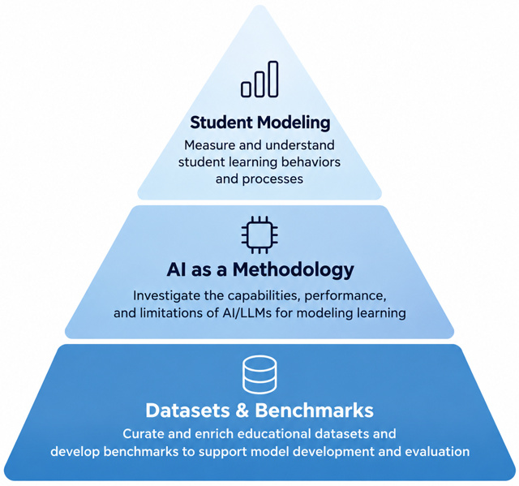
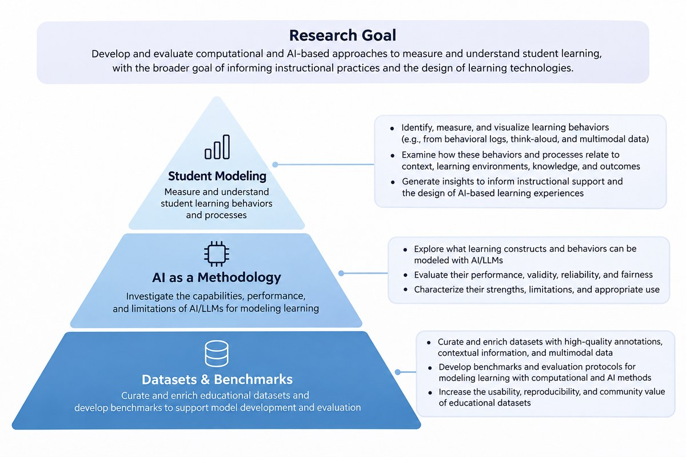

Learning Sciences · Educational Data Science · AI in Education
Jiayi (Joyce) Zhang
I am a postdoctoral researcher in the Department of Computer Science at Worcester Polytechnic Institute (WPI), working with Neil Heffernan and ASSISTments. Prior to this, I earned my Ph.D. in Learning Sciences and Technologies from the University of Pennsylvania, where I was supervised by Ryan Baker, and my M.A. in Cognitive Science in Education from Teachers College, Columbia University.
My research lies at the intersection of learning sciences, cognitive science, educational data science, and artificial intelligence (AI). I use data-driven approaches to visualize and understand student learning in digital learning environments. My work spans three interconnected areas:

- Developing computational models to measure and understand student learning behaviors and processes;
- Evaluating AI as a methodological tool for student modeling, and
- Building datasets and benchmarks for model development and evaluation.
Recent Highlights
- Serving as Publication Co-Chair for the Educational Data Mining conference (2027)
- Co-PI on an NSF award to curate a multimodal dataset to study mathematical misconceptions (link) (2026)
- Our paper on children’s AI literacy books won Best Student Paper at AIED (2026)
- Guest lectures on text analytics at UVA and GenAI for research at the University of Houston (09/2026)
- Taught in Penn’s Learning Analytics capstone seminar and continued mentoring student projects (Summer 2026)
- Joined ASSISTments at WPI as a postdoctoral researcher (01/2026)
Research

1. Student modelingMeasure and understand student learning behaviors and processes
Learning is often a latent process: knowledge, engagement, and cognitive and metacognitive processes are difficult to observe directly. Without knowing what students know, how they feel, what they think, and where they struggle or disengage, it is hard to provide the scaffolding and support that facilitate learning.
This line of research therefore asks how data can be used to measure and model these aspects of learning, so that they become visible and actionable for understanding learning and informing adaptive support.
To this end, I have built and improved computational models that assess knowledge, engagement (e.g., gaming the system, carelessness), and cognitive and metacognitive processes (e.g., self-regulated learning and socially shared regulation of learning) from log, textual, or multimodal data across digital learning platforms and intelligent tutoring systems. I evaluate these models for robustness, fairness, and generalizability.
I also examine how the measured behaviors and processes relate to other factors, such as instructional support, learning gains, and motivation, to advance theoretical understanding of learning and generate insights for instructional support.
Selected publications
Measure
- Using Machine Learning to Detect SMART Model Cognitive Operations in Mathematical Problem-Solving Process (JEDM 2022)
- Using Large Language Models to Detect Self-Regulated Learning in Think-Aloud Protocols (EDM 2024)
- Using Large Language Models to Detect Socially Shared Regulation of Learning in Collaborative Learning (LAK 2026)
- Carelessness Detection Using Performance Factor Analysis: A New Operationalization with Unexpectedly Different Relationship to Learning (CSTE 2025)
- LLM-Based Approaches for Detecting Gaming the System in Self-Explanation (AIME-Con 2025)
- Knowledge Tracing Models’ Predictive Performance when a Student Starts a Skill (EDM 2021)
Understand
- Understanding Gaming the System through Analyzing Self-Regulated Learning in Think-Aloud Protocols (LAK 2026)
- How Much Mastery Is Enough Mastery? The Relationship Between Mastery in a Lesson and the Performance on the Subsequent Lesson (EDM 2025)
- Using Think-Aloud Data to Understand Relations between Self-Regulation Cycle Characteristics and Student Performance in Intelligent Tutoring Systems (LAK 2024)
- Studying the Interplay of Self-Regulated Learning Cycles and Scaffolding Through Ordered Network Analysis Across Three Tutoring Systems (ICQE 2024)
- Gaming and Confrustion Explain Learning Advantages for a Math Digital Learning Game (AIED 2021)
2. AI as a methodologyInvestigate the capabilities, performance, and limitations of AI/LLMs for modeling learning
Many learning processes have traditionally depended on labor-intensive qualitative coding and annotation, which limits the scale at which they can be studied. This line of research asks when and how large language models can support qualitative coding, annotation, and codebook development in ways that are valid, reliable, and theoretically grounded, and which factors determine the quality and feasibility of AI-assisted qualitative research.
Selected publications
Qualitative coding
- Assessing the Potential and Limits of Large Language Models in Qualitative Coding (ICQE 2024)
- Scaffolding Human-LLM Qualitative Coding Through Inference Evaluation and Construct Boundaries (ICQE 2026)
- Qualitative Coding with GPT-4: Where It Works Better (JLA 2025)
Codebook development
3. Datasets & benchmarksCurate and enrich educational datasets and develop benchmarks to support model development and evaluation
Better AI models and research methods depend on the quality and richness of educational data, and on infrastructure that lets those data be accessed and reused responsibly. This line of research asks how existing data can be enriched, and how datasets and benchmarks can be curated and shared to serve researchers, educators, technologists, and AI developers. I am Co-PI on an NSF-funded effort to curate a large-scale multimodal dataset of middle-school mathematics learning in ASSISTments, and I contribute to SafeInsights, a privacy-preserving research infrastructure.
Selected work
Publications
Source: Google Scholar, as of September 27, 2026.
Journal articles
- Zambrano, A., Wei, Z., Zhang, J., Baker, R., Ocumpaugh, J., Barany, A., Liu, X., Zhou, Y., Paquette, L., Ginger, J., & Borchers, C. (2025). Data Plus Theory Equals Codebook: Leveraging LLMs for Human-AI Codebook Development. Journal of Educational Data Mining.
- Borchers, C., Zhang, J., Fleischer, H., Schanze, S., Aleven, V., & Baker, R. S. (2025). Large Language Models Generalize SRL Prediction to New Languages Within But Not Between Domains. Journal of Educational Data Mining.
- Liu, X., Zambrano, A. F., Baker, R. S., Barany, A., Ocumpaugh, J., Zhang, J., Pankiewicz, M., Nasiar, N., & Wei, Z. (2025). Qualitative Coding with GPT-4: Where It Works Better. Journal of Learning Analytics, 12(1), 169–185.
- Baker, R. S., Richey, J. E., Zhang, J., Karumbaiah, S., Andres-Bray, J. M., Nguyen, H. A., Andres, J. M. A. L., & McLaren, B. M. (2024). Gaming the system mediates the relationship between gender and learning outcomes in a digital learning game. Instructional Science, 1–36.
- Zhang, J., Andres, J. M. A. L., Hutt, S., Baker, R. S., Ocumpaugh, J., Nasiar, N., … & Young, T. (2022). Using Machine Learning to Detect SMART Model Cognitive Operations in Mathematical Problem-Solving Process. Journal of Educational Data Mining, 14(3), 76–108.
Conference papers
- Zhang, J., Borchers, C., Wang, C., Kumar, V., Teffera, L., McLaren, B., & Baker, R. S. (2026). Understanding Gaming the System through Analyzing Self-Regulated Learning in Think-Aloud Protocols. In Proceedings of the Learning Analytics and Knowledge Conference (LAK).
- Zhang, J., Borchers, C., Cohn, C., Srivastava, N., Snyder, C., Guo, S., T S, A., Mohammed, N., Noh, H., & Biswas, G. (2026). Using Large Language Models to Detect Socially Shared Regulation of Learning in Collaborative Learning. In Proceedings of the Learning Analytics and Knowledge Conference (LAK).
- Zhang, J., Baker, R. S., Mallick, D. B., Heffernan, C., & Heffernan, N. (2026). A Case Study Reexamining the Cold-Start Problem in Knowledge Tracing Models and Implications for SafeInsights, an Education Research Infrastructure. The Seventh Annual Workshop on A/B Testing and Platform-Enabled Learning Engineering (PELE) at Learning@Scale. arXiv:2606.11004.
- Zambrano, A., Zhang, J., Pankiewicz, M., & Baker, R. S. (2026). Practice as the Key to Success: Understanding the Role of Prior Knowledge, Affective States and Learning Resources in Computer Science Education. In Proceedings of the Learning Analytics and Knowledge Conference (LAK).
- Wu, M., Zhang, J., Zhang, R. Z. (2026). Decoding Human and AI Persuasion in National College Debate: Analyzing Prepared Arguments Through Aristotle’s Rhetorical Principles. American Educational Research Association (AERA).
- Xiao, F., Zhang, J., Zambrano, A., & Jiang, S. (2026). What Children’s AI Literacy Books Teach About Artificial Intelligence: A Content Analysis Using the AI4K12 Framework. Proceedings of the International Conference on Artificial Intelligence in Education (AIED). Best Student Paper Award
- Borchers, C., Zhang, J., & Gurung, A. (2026). Representation Learning to Study Temporal Dynamics in Tutorial Scaffolding. Proceedings of the International Conference on Artificial Intelligence in Education (AIED).
- Huang, X., Borchers, C., Zhang, J., & Lajoie, S. P. (2026). Physiological and Semantic Patterns in Medical Teams Using an Intelligent Tutoring System. Proceedings of the International Conference on Artificial Intelligence in Education (AIED).
- Gao, J., Zhang, J., & Chen, D. (2026). To Use or Not to Use: Investigating Student Perceptions of Faculty Generative AI Usage in Higher Education. Proceedings of the International Conference on Artificial Intelligence in Education (AIED).
- Worden, E., Lee, M., Siedahmed, A., Sales, A., Zhang, J., Shraga, R., & Heffernan, N. (2026). Short, long, or affective: Evaluating LLM-generated feedback styles for student learning. Proceedings of the International Conference on Artificial Intelligence in Education (AIED).
- Deho, O., Baker, R., Smith, D., Zhang, J., & Woodhead, S. (2026). To what extent can early keystroke patterns predict knowledge gain in mathematics. Proceedings of the International Conference on Educational Data Mining (EDM).
- Worden, E., Dang, L., Lim, W. C., Miller, S., Zhang, J., Haim, A., Sales, A., Gurung, A., & Heffernan, N. (2026). A large-scale randomized controlled trial showing LLM-generated feedback helps low-knowledge middle school math students with short-term learning. ACM Conference on Learning@Scale (L@S).
- Lee, S., Zhang, S., Zhang, J., Zambrano, A., Li, H., Adjei, S., Baker, R. S., & Botelho, A. (2026). A Tale of Two Models: Leveraging Self-Explanation to Contextualize Divergent Models of Student Carelessness. OSF.
- Wei, Z., Zhang, J., Baker, R. S., Borchers, C., Barany, A., & Liu, X. (2026). Scaffolding Human-LLM Qualitative Coding Through Inference Evaluation and Construct Boundaries. Proceedings of the International Conference on Quantitative Ethnography (ICQE).
- Zhang, J., Baker, R. S., Srivastava, N., Ocumpaugh, J., Mills, C., & McLaren, B. M. (2025). Carelessness detection using performance factor analysis: A new operationalization with unexpectedly different relationship to learning. In Proceedings of the International Conference on Computer Science and Technologies in Education. Best Presentation
- Zhang, J., Vanacore, K., Baker, R., Ch, N., Mills, C., & Henkel, O. (2025). How much mastery is enough mastery? The relationship between mastery in a lesson and the performance on the subsequent lesson. In Proceedings of the International Conference on Educational Data Mining (EDM).
- Zhang, J., Baker, R. S., & McLaren, B. M. (2025). LLM-Based Approaches for Detecting Gaming the System in Self-Explanation. In Proceedings of the Artificial Intelligence in Measurement and Education Conference (AIME-Con).
- Zhang, J. (2025). Examining the Robustness of Large Language Models across Language Complexity. American Educational Research Association (AERA).
- Liu, X., Wei, Z., Baker, R. S., Metcalf, S. J., Zhang, J., Barany, A., Slater, S., Swanson, L., & Gagon, D. (2025). Integrating Large Language Models and Machine Learning to Detect Struggle in Educational Games. In Proceedings of the International Conference on Artificial Intelligence in Education (AIED).
- Liu, Y., Davidesco, I., McLaren, B., Richey, E., Xue, X., Teffera, L., Stec, H., Zhang, J., Liu, X., & Golumbic, E. (2025). Utilizing Log-based and Neurophysiological Measures to Understand Engagement and Learning with Intelligent Tutoring Systems. In Proceedings of the International Conference on Artificial Intelligence in Education (AIED).
- Moreau-Pernet, B., Vanacore, K., Zhang, J., Baker, R., & Henkel, O. (2025). Keeping Students in their Zone of Proximal Development: A Machine Learning Approach for Intelligent Tutoring Systems. OSF.
- Zhang, J., Borchers, C., Aleven, V., & Baker, R. S. (2024). Using large language models to detect self-regulated learning in think-aloud protocols. In Proceedings of the International Conference on Educational Data Mining (EDM).
- Zhang, J., Borchers, C., & Barany, A. (2024). Studying the Interplay of Self-Regulated Learning Cycles and Scaffolding Through Ordered Network Analysis Across Three Tutoring Systems. In Proceedings of the International Conference on Quantitative Ethnography (ICQE). Best Student Paper Award
- Liu, X., Zhang, J., Barany, A., Pankiewicz, M., & Baker, R. S. (2024). Assessing the Potential and Limits of Large Language Models in Qualitative Coding. In Proceedings of the International Conference on Quantitative Ethnography (ICQE).
- Borchers, C., Zhang, J., Baker, R. S., & Aleven, V. (2024). Using Think-Aloud Data to Understand Relations between Self-Regulation Cycle Characteristics and Student Performance in Intelligent Tutoring Systems. In Proceedings of the Learning Analytics and Knowledge Conference (LAK).
- Zambrano, A. F., Zhang, J., & Baker, R. S. (2024). Investigating Algorithmic Bias on Bayesian Knowledge Tracing and Carelessness Detectors. In Proceedings of the Learning Analytics and Knowledge Conference (LAK). Best Paper Nomination
- Cloude, E. B., Zhang, J., Baker, R. S., & Fouh, E. (2024). Procrastination vs. Active Delay: How Students Prepare to Code in Introductory Programming. In Proceedings of the ACM Technical Symposium on Computer Science Education.
- Švábenský, V., Pankiewicz, M., Zhang, J., Cloude, E. B., Baker, R. S., & Fouh, E. (2024). Comparison of Three Programming Error Measures for Explaining Variability in CS1 Grades. In Proceedings of the Innovation and Technology in Computer Science Education.
- Borchers, C., Liu, X., Lee, H. H., & Zhang, J. (2024). Ethical AIED and AIED Ethics: Toward Synergy Between AIED Research and Ethical Frameworks. In Proceedings of the International Conference on Artificial Intelligence in Education (AIED).
- Zambrano, A., Ocumpaugh, J., Nasiar, N., Goslen, A., Zhang, J., Rowe, J., … & Hutt, S. (2024). Says Who? How different ground truth measures of emotion impact student affective modeling. In Proceedings of the International Conference on Educational Data Mining (EDM).
- Barany, A., Nasiar, N., Porter, C., Zambrano, A. F., Andres, A. L., Bright, D., … & Baker, R. S. (2024). ChatGPT for education research: Exploring the potential of large language models for qualitative codebook development. In Proceedings of the International Conference on Artificial Intelligence in Education (AIED).
- Zhang, J., Baker, R. S., Andres, J. A., Hutt, S., & Sethuraman, S. (2023). Automated Multi-Dimensional Analysis of Peer Feedback in Middle School Mathematics. In Proceedings of the International Society of the Learning Sciences (ISLS).
- Zhang, J., Pang, S., Andres, J. A., Baker, R. S., Cloude, E., Anh, H., & Nguyen, B. M. (2023). Leveraging Natural Language Processing to Detect Gaming the System in Open-ended Questions in a Math Digital Learning Game. Presented at the Annual Meeting of the Society for Text and Discourse.
- Zhang, J., Baker, R. S., & Farmer, T. (2023). No Benefit for High-Dosage Time Management Interventions in Online Courses. In Proceedings of the ACM Conference on Learning@Scale.
- Nasiar, N., Baker, R. S., Zou, Y., Zhang, J., & Hutt, S. (2023). Modeling problem-solving strategy invention (PSSI) behavior in an online math environment. In Proceedings of the International Conference on Artificial Intelligence in Education (AIED).
- Goslen, A., Henderson, N., Rowe, J., Zhang, J., Hutt, S., Ocumpaugh, J., … & Lester, J. (2023). Enhancing Engagement Modeling in Game-Based Learning Environments with Student-Agent Discourse Analysis. In Proceedings of the International Conference on Artificial Intelligence in Education (AIED).
- Andres, J. M., Baker, R. S., Hutt, S. J., Mills, C., Zhang, J., Rhodes, S., & DePiro, A. (2023). Anxiety, achievement, and self-regulated learning in CueThink. In Proceedings of the International Society of the Learning Sciences (ISLS).
- Zhang, J., Andres, J. M. A. L., Hutt, S., Baker, R. S., Ocumpaugh, J., Mills, C., Brooks, J., Sethuraman, S., & Young, T. (2022). Detecting SMART Model Cognitive Operations in Mathematical Problem-Solving Process. In Proceedings of the International Conference on Educational Data Mining (EDM). Best Paper Nomination
- Zhang, J., Hutt, S., Ocumpaugh, J., Henderson, N., Goslen, A., Rowe, J. P., … & Lester, J. (2022). Investigating Student Interest and Engagement in Game-Based Learning Environments. In Proceedings of the International Conference on Artificial Intelligence in Education (AIED).
- Zhang, J., Cunningham, T., Iyer, R., Baker, R., & Fouh, E. (2022). Exploring the Impact of Voluntary Practice and Procrastination in an Introductory Programming Course. In Proceedings of the ACM Technical Symposium on Computer Science Education.
- Karumbaiah, S., Zhang, J., Baker, R. S., Scruggs, R., Cade, W., Clements, M., & Lin, S. (2022). Using Neural Network-Based Knowledge Tracing for a Learning System with Unreliable Skill Tags. In Proceedings of the International Conference on Educational Data Mining (EDM).
- Wu, M., Zhang, J., & Barany, A. (2022). Understanding Detectors for SMART Model Cognitive Operation in Mathematical Problem-Solving Process: An Epistemic Network Analysis. In Proceedings of the International Conference on Quantitative Ethnography (ICQE).
- He, M., Baker, R., Hutt, S., & Zhang, J. (2022). A Less Overconservative Method for Reliability Estimation for Cohen’s Kappa.
- Zhang, J., Das, R., Baker, R. S., & Scruggs, R. (2021). Knowledge Tracing Models’ Predictive Performance when a Student Starts a Skill. In Proceedings of the International Conference on Educational Data Mining (EDM). Runner-up, Best Poster Presentation
- Richey, J. E., Zhang, J., Das, R., Andres-Bray, J. M., Scruggs, R., Mogessie, M., … & McLaren, B. M. (2021). Gaming and confrustion explain learning advantages for a math digital learning game. In Proceedings of the International Conference on Artificial Intelligence in Education (AIED). Best Paper Nomination
Teaching
Courses
- Co-instructor. EDUC 6195, Capstone Seminar: Learning Analytics. University of Pennsylvania.Jun–Aug 2026
- Co-instructor. EDUC 6191, Core Methods in Educational Data Mining. University of Pennsylvania.Sep–Dec 2024
- Guest lecturer. EDIS 8100, Teaching and Learning Analytics. University of Virginia.
Text-Based Analytics and Natural Language ProcessingSep 2026 - Guest lecturer. CUIN 7397, Research in the Age of AI. University of Houston.
Applications of GenAI in Interacting with Scholarly LiteratureSep 2026 - Guest lecturer. CS 565, User Modeling. Worcester Polytechnic Institute.
LLM for Student ModelingNov 2025 - Guest lecturer. EDUC 6191, Core Methods in Educational Data Mining. University of Pennsylvania.
Bayesian Knowledge TracingOct 2023, 2025 - Teaching assistant. Introduction to Psychology. University of Pittsburgh.Sep–Dec 2014
Mentorship
- Mentor. Teachers College Alumni Mentorship Program, Teachers College, Columbia University2026–2027
- Mentor. Learning Analytics and Artificial Intelligence Capstone Project, University of Pennsylvania2026–2027